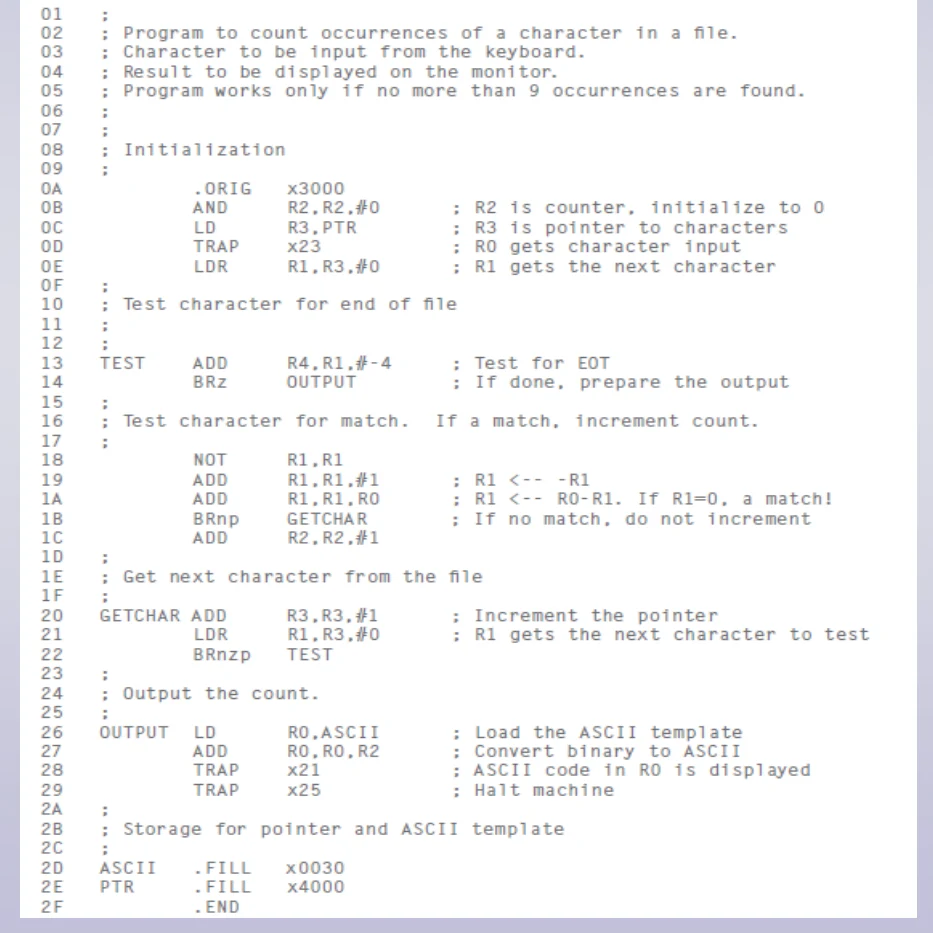

Chapter 6–7 课程练习
Chapter 6 · 程序设计与调试
Chapter 7 · LC-3 汇编语言
Assignment 5
LC-3 汇编作业 · 6 题
Problem 1 (15 points) 符号表、循环次数与机器码
Consider the following assembly code:
.ORIG x4000
LEA R3, INPUT
LD R1, SIZE
ADD R3, R3, R1
LOOP LDR R0, R3, #-1
ADD R3, R3, #-1
ADD R1, R1, #-1
BRp LOOP
HALT
INPUT .STRINGZ "I Like LC-3"
STRING .BLKW 4
INPUT2 .FILL x1
SIZE .FILL #11
.ENDIn the first pass, the assembler creates the symbol table. Fill in the symbol table created by the assembler for this program. (5 points)
| Symbol | Address |
|---|---|
How many times does the instruction at label LOOP execute? (5 points)
In the second pass, the assembler creates a binary (.obj) version of the program, using the entries from the symbol table. Write the binary code generated for the first two instructions (LEA and LD). (5 points)
Problem 2 (15 points) 找出三处汇编错误
Identify 3 assembly errors in the following program:
.ORIG x3001
AND R5, R5, ZERO
LD R5, STRING
NEXT ADD R5, R5, #1
BRz NEXT
LDR R4, R5, #0
SUB R4, R4, #1
ST R4, STRING
NEXT HALT
ZERO .FILL #0
STRING .STRINGZ "Hurray !!!"
.ENDProblem 3 (15 points) 跟踪位运算程序
Consider the following assembly program:
.ORIG X3000
AND R4, R4, #0
LD R5, INPUT
LOOP BRz END
BRp SKIP
ADD R4, R4, #1
SKIP ADD R5, R5, R5
BR LOOP
END ST R4, RESULT
HALT
INPUT .FILL x1234
RESULT .BLKW 1
.ENDBriefly explain what the program does. (i.e., Specify how the value at RESULT relates to value at the INPUT after the execution of the program.) (5 points)
How many times does the instruction at label LOOP execute? (5 points)
What value will be contained in R5 after the execution of the program? (5 points)
Problem 4 (15 points) 补全字符串比较程序
The following LC-3 program compares two character strings of the same length. The source strings are in the .STRINGZ form. The first string starts at memory location x4000, and the second string starts at memory location x4100. If the strings are the same, the program terminates with the value 1 in R5. Insert instructions at (a), (b), and (c) that will complete the program.
.ORIG x3000
LD R1, FIRST
LD R2, SECOND
AND R0, R0, #0
LOOP -------------- (a)
LDR R4, R2, #0
BRz NEXT
ADD R1, R1, #1
ADD R2, R2, #1
-------------- (b)
-------------- (c)
ADD R3, R3, R4
BRz LOOP
AND R5, R5, #0
BRnzp DONE
NEXT AND R5, R5, #0
ADD R5, R5, #1
DONE TRAP x25
FIRST .FILL x4000
SECOND .FILL x4100
.ENDProblem 5 (20 points) 循环输出 100 个 Z
Using the iteration construct, write an LC-3 assembly program that displays exactly 100 Zs on the screen (Assume that .ORIG x3000).
Problem 6 (20 points) 比较寄存器中的两个数
Write a short LC-3 program that compares the two numbers in R1 and R2 and puts the value 0 in R0 if R1 = R2, 1 if R1 > R2, and −1 if R1 < R2 (Assume that .ORIG x3000).
Problem Set 3
原题单覆盖 Chapters 5–7 · 14 题
第 1 题 根据寄存器快照补全机器码
(Adapted from 5.31) The following diagram shows a snapshot of the 8 registers of the LC-3 before and after the instruction at location x1000 is executed. Fill in the bits of the instruction at location x1000.
| Register | Before | After |
|---|---|---|
| R0 | x0000 | x0000 |
| R1 | x1111 | x1111 |
| R2 | x2222 | x2222 |
| R3 | x3333 | x3333 |
| R4 | x4444 | x4444 |
| R5 | x5555 | xFFF8 |
| R6 | x6666 | x6666 |
| R7 | x7777 | x7777 |
| Memory Location | Value |
|---|---|
| x1000 | 0001 ________________________ |
查看教师参考答案
1. (Adapted from 5.31) The following diagram shows a snapshot of the 8 registers of the LC-3 before and after the instruction at location x1000 is executed. Fill in the bits of the instruction at location x1000.
| Register | Before | After |
|---|---|---|
| R0 | x0000 | x0000 |
| R1 | x1111 | x1111 |
| R2 | x2222 | x2222 |
| R3 | x3333 | x3333 |
| R4 | x4444 | x4444 |
| R5 | x5555 | xFFF8 |
R6 x6666 x6666
R7 x7777 x7777| Memory Location | Value |
|---|
x1000 0001 101 000 1 11000第 2 题 断点、寄存器与时钟周期
The memory locations x3000 to x3007 contain the values as shown in the table below. Assume the memory contents below are loaded into the simulator and the PC has been set to point to location x3000. Assume that a breakpoint has been placed to the left of the HALT instruction (i.e. at location x3006 which contains 1111 0000 0010 0101). Assume that before the program is run, each of the 8 registers has the value x0000 and the NZP bits are 010.
| Memory Location | Value |
|---|---|
| x3000 | 0101000000100000 |
| x3001 | 0001000000100101 |
| x3002 | 0010001000000100 |
| x3003 | 0001000000000000 |
| x3004 | 0001001001111111 |
| x3005 | 0000001111111101 |
| x3006 | 1111000000100101 |
| x3007 | 0000000000000100 |
In no more than 15 words, summarize what this program will do when the Run button is pushed in the simulator.
Hint: What relationship is there between the value loaded from memory and the final value in R0 after the program has completed?
What are the contents of the PC, the 8 general purpose registers (R0-R7), and the N, Z, and P condition code registers after the program completes?
What is the total number of CPU clock cycles that this program will take to execute until it reaches the breakpoint? (Note: when there is a breakpoint placed at an instruction, the program stops right before executing the instruction, not after.)
Note: Assume each state that accesses memory takes 5 cycles to complete and every other state takes 1 cycle to execute.
查看教师参考答案
2. The memory locations x3000 to x3007 contain the values as shown in the table below. Assume the memory contents below are loaded into the simulator and the PC has been set to point to location x3000. Assume that a breakpoint has been placed to the left of the HALT instruction (i.e. at location x3006 which contains 1111 0000 0010 0101). Assume that before the program is run, each of the 8 registers has the value x0000 and the NZP bits are 010.
| Memory Location | Value |
|---|---|
| x3000 | 0101000000100000 |
| x3001 | 0001000000100101 |
| x3002 | 0010001000000100 |
| x3003 | 0001000000000000 |
| x3004 | 0001001001111111 |
| x3005 | 0000001111111101 |
| x3006 | 1111000000100101 |
| x3007 | 0000000000000100 |
a. In no more than 15 words, summarize what this program will do when the Run button is pushed in the simulator.
Hint: What relationship is there between the value loaded from memory and the final value in R0 after the program has completed?
5 is put in R0 and shifted left the value at location x3007 times
b. What are the contents of the PC, the 8 general purpose registers (R0-R7), and the N, Z, and P condition code registers after the program completes?
| PC | x3006 |
|---|---|
| R0 | x0050 |
| R1 | x0000 |
| R2 | x0000 |
| R3 | x0000 |
| R4 | x0000 |
| R5 | x0000 |
| R6 | x0000 |
| R7 | x0000 |
| N | 0 |
| Z | 1 |
| P | 0 |
c. What is the total number of CPU clock cycles that this program will take to execute until it reaches the breakpoint?
Note: Assume each state that accesses memory takes 5 cycles to complete and every other state takes 1 cycle to execute.
| Memory Location | Value | Instruction | Cycles to Execute | Number of times Executed | Total Cycles |
|---|---|---|---|---|---|
| x3000 | 0101000000100000 | AND | 9 | 1 | 9 |
| x3001 | 0001000000100101 | ADD | 9 | 1 | 9 |
| x3002 | 0010001000000100 | LD | 15 | 1 | 15 |
| x3003 | 0001000000000000 | ADD | 9 | 4 | 36 |
| x3004 | 0001001001111111 | ADD | 9 | 4 | 36 |
| x3005 | 0000001111111101 | Branch | 10 taken 9 not taken | 3 taken 1 not taken | 39 |
Total Cycle: 9 + 9 + 15 + 36 + 36 + 39 = 144
第 3 题 推断程序功能
Below is a segment of LC-3 assembly language program.
| ADD R2, R1, #0 | |
|---|---|
| HERE | ADD R3, R2, #-1 |
| AND R3, R3, R2 | |
| BRz END | |
| ADD R2, R2, #1 | |
| BRnzp HERE | |
| END | HALT |
If the data in R1 is an unsigned integer between 2 and 32768 (inclusive), what does the program do?
(Hint: what is the relationship between the resulting integer in R2 and the original integer in R1?)
查看教师参考答案
3. Below is a segment of LC-3 assembly language program.
ADD R2, R1, #0
HERE ADD R3, R2, #-1
AND R3, R3, R2
BRz END
ADD R2, R2, #1
BRnzp HERE
END HALTIf the data in R1 is an unsigned integer between 2 and 32768 (inclusive), what does the program do?
(Hint: what is the relationship between the resulting integer in R2 and the original integer in R1?)
The program finds out the smallest power of 2 which is larger than or equal to the unsigned integer in R1.
第 4 题 跟踪机器码程序
What does the following program do (in 15 words or fewer)? The PC is initially at x3000.
| Memory Location | Value |
|---|---|
| x3000 | 0101 000 000 1 00000 |
| x3001 | 0010 001 011111110 |
| x3002 | 0000 010 000000100 |
| x3003 | 0000 011 000000001 |
| x3004 | 0001 000 000 1 00001 |
| x3005 | 0001 001 001 000 001 |
| x3006 | 0000 111 111111011 |
| x3007 | 1111 0000 0010 0101 |
查看教师参考答案
4. What does the following program do (in 15 words or fewer)? The PC is initially at x3000.
| Memory Location | Value |
|---|---|
| x3000 | 0101 000 000 1 00000 |
| x3001 | 0010 001 011111110 |
| x3002 | 0000 010 000000100 |
| x3003 | 0000 011 000000001 |
| x3004 | 0001 000 000 1 00001 |
| x3005 | 0001 001 001 000 001 |
| x3006 | 0000 111 111111011 |
| x3007 | 1111 0000 0010 0101 |
Counts the number of bits that are set to 1 in the word at x3100
第 5 题 找出负数并存下地址
Prior to executing the following program, memory locations x3100 through x4000 are initialized to random values, exactly one of which is negative. The following program finds the address of the negative value, and stores that address into memory location x3050. Two instructions are missing. Fill in the missing instructions to complete the program. The PC is initially at x3000.
| Memory Location | Value |
|---|---|
| x3000 | 1110 000 011111111 |
| x3001 | |
| x3002 | |
| x3003 | 0001 000 000 1 00001 |
| x3004 | 0000 111 111111100 |
| x3005 | 0011 000 001001010 |
| x3006 | 1111 0000 0010 0101 |
查看教师参考答案
5. Prior to executing the following program, memory locations x3100 through x4000 are initialized to random values, exactly one of which is negative. The following program finds the address of the negative value, and stores that address into memory location x3050. Two instructions are missing. Fill in the missing instructions to complete the program. The PC is initially at x3000.
| Memory Location | Value |
|---|---|
| x3000 | 1110 000 011111111 |
| x3001 | 0110 001 000 000000 |
| x3002 | 0000 100 000000010 |
| x3003 | 0001 000 000 1 00001 |
| x3004 | 0000 111 111111100 |
| x3005 | 0011 000 001001010 |
| x3006 | 1111 0000 0010 0101 |
第 6 题 区分指令次数与内存访问次数
The LC-3 has just finished executing a large program. A careful examination of each clock cycle reveals that the number of executed store instructions (ST, STR, and STI) is greater than the number of executed load instructions (LD, LDR, and LDI). However, the number of memory write accesses is less than the number of memory read accesses, excluding instruction fetches. How can that be? Be sure to specify which instructions may account for the discrepancy.
查看教师参考答案
6. The LC-3 has just finished executing a large program. A careful examination of each clock cycle reveals that the number of executed store instructions (ST, STR, and STI) is greater than the number of executed load instructions (LD, LDR, and LDI). However, the number of memory write accesses is less than the number of memory read accesses, excluding instruction fetches. How can that be? Be sure to specify which instructions may account for the discrepancy.
A large number of LDI instructions (two read accesses) and STI instructions (one read access and one write access) could account for this discrepancy.
第 7 题 标签与 LD
(7.2) An LC-3 assembly language program contains the instruction:
ASCII LD R1, ASCIIThe label ASCII corresponds to the address x4F08. If this instruction is executed during the running of the program, what will be contained in R1 immediately after the instruction is executed?
查看教师参考答案
7. (7.2) An LC-3 assembly language program contains the instruction: ASCII LD R1, ASCIIThe label ASCII corresponds to the address x4F08. If this instruction is executed during the running of the program, what will be contained in R1 immediately after the instruction is executed?
Since the LD instruction is loading itself, the PC offset is #-1 R1 = 0010 001 1 1111 1111
第 8 题 立即数范围与错误检测
(Adapted from 7.10) The following program fragment has an error in it. Identify the error and explain how to fix it.
| ADD R3, R3, #30 | |
|---|---|
| ST R3, A | |
| HALT | |
| A | .BLKW 1 |
Will this error be detected when this code is assembled or when this code is run on the LC-3?
查看教师参考答案
8. (Adapted from 7.10) The following program fragment has an error in it. Identify the error and explain how to fix it.
ADD R3, R3, #30
ST R3, A
HALT
A .BLKW 1Will this error be detected when this code is assembled or when this code is run on the LC-3?
The immediate value is too large for ADD R3, R3, #30.
This error will be detected at assembly time because the immediate operand must fit in 5 bits (−16 to +15).
We can split the instruction into two ADD R3, R3, #15.第 9 题 反推循环初值
(Adapted from 6.14) Consider the following assembly language program:
| AND R2, R2, #0 | |
|---|---|
| LOOP | ADD R1, R1, #-3 |
| BRn END | |
| ADD R2, R2, #1 | |
| BRnzp LOOP | |
| END | HALT |
What are the possible initial values of R1 that cause the final value in R2 to be 3?
查看教师参考答案
9. (Adapted from 6.14) Consider the following assembly language program:
AND R2, R2, #0
LOOP ADD R1, R1, #-3
BRn END
ADD R2, R2, #1
BRnzp LOOP
END HALTWhat are the possible initial values of R1 that cause the final value in R2 to be 3?
For R2 to contain the value 3, we must have looped the loop body 3 times. This means BRn must not have initiated a branch for 3 consecutive times. Therefore, R1 wasn't negative after the instruction ADD R1, R1, #-3 wasexecuted 3 times and then was negative after the 4th execution of the instruction. That is:
R1 − (3 × 3) ≥ 0 and R1 − (3 × 4) < 0
Solving the inequalities yields, 9 ≤ R1 < 12. Since a register contains integers, R1 could have been 9, 10, or 11.
第 10 题 符号表与程序功能
(Adapted from 7.16) Assume a sequence of nonnegative integers is stored in consecutive memory locations, one integer per memory location, starting at location x4000. Each integer has a value between 0 and 30,000 (decimal). The sequence terminates with the value -1 (i.e., xFFFF).
Create the symbol table entries generated by the assembler when translating the following routine into machine code:
| .ORIG x3000 | |
|---|---|
| AND R4, R4, #0 | |
| AND R3, R3, #0 | |
| LD R0, NUMBERS | |
| LOOP | LDR R1, R0, #0 |
| NOT R2, R1 | |
| BRz DONE | |
| AND R2, R1, #1 | |
| BRz L1 | |
| ADD R4, R4, #1 | |
| BRnzp NEXT | |
| L1 | ADD R3, R3, #1 |
| NEXT | ADD R0, R0, #1 |
| BRnzp LOOP | |
| DONE | TRAP x25 |
| NUMBERS | .FILL x4000 |
| .END |
What does the above program do?
查看教师参考答案
10.(Adapted from 7.16) Assume a sequence of nonnegative integers is stored in consecutive memory locations, one integer per memory location, starting at location x4000. Each integer has a value between 0 and 30,000 (decimal). The sequence terminates with the value -1 (i.e., xFFFF).
a. Create the symbol table entries generated by the assembler when translating the following routine into machine code:
.ORIG x3000
AND R4, R4, #0
AND R3, R3, #0
LD R0, NUMBERS
LOOP LDR R1, R0, #0
NOT R2, R1
BRz DONE
AND R2, R1, #1
BRz L1
ADD R4, R4, #1
BRnzp NEXT
L1 ADD R3, R3, #1
NEXT ADD R0, R0, #1
BRnzp LOOP
DONE TRAP x25
NUMBERS .FILL x4000
.END| Label | Address |
|---|---|
| LOOP | x3003 |
| L1 | x300A |
| NEXT | x300B |
| DONE | x300D |
| NUMBERS | x300E |
b. What does the above program do?
The instruction AND R2, R1, #1 performs a bit mask (x0001) to decide whether the least significant bit of the value is 0 or 1. The LSB of a number is used to determine whether the integer was even or odd. For example, numbers with a zero LSB are: 0000 (#0), 0010 (#2), 0100 (#4), 0110 (#6), which are all even.Hence, R3 counts the amount of even numbers in the list and R4 counts the amount of odd numbers.
第 11 题 补全字符串比较程序
(Adapted from 7.18) The following LC-3 program compares two character strings of the same length. The source strings are in the .STRINGZ form. The first string starts at memory location x4000, and the second string starts at memory location x4100. If the strings are the same, the program terminates with the value 1 in R5; otherwise the program terminates with the value 0 in R5. Insert one instruction each at (a), (b), and (c) that will complete the program. (Note: The memory location immediately following each string contains x0000.)
| .ORIG x3000 | ||
|---|---|---|
| LD R1, FIRST | ||
| LD R2, SECOND | ||
| AND R0, R0, #0 | ||
| LOOP | ____________________ | ; (a) |
| LDR R4, R2, #0 | ||
| BRz NEXT | ||
| ADD R1, R1, #1 | ||
| ADD R2, R2, #1 | ||
| ____________________ | ; (b) | |
| ____________________ | ; (c) | |
| ADD R3, R3, R4 | ||
| BRz LOOP | ||
| AND R5, R5, #0 | ||
| BRnzp DONE | ||
| NEXT | AND R5, R5, #0 | |
| ADD R5, R5, #1 | ||
| DONE | TRAP x25 | |
| FIRST | .FILL x4000 | |
| SECOND | .FILL x4100 | |
| .END |
查看教师参考答案
11. (Adapted from 7.18) The following LC-3 program compares two character strings of the same length. The source strings are in the .STRINGZ form. The first string starts at memory location x4000, and the second string starts at memory location x4100. If the strings are the same, the program terminates with the value 1 in R5; otherwise the program terminates with the value 0 in R5. Insert one instruction
each at (a), (b), and (c) that will complete the program. (Note: The memory location immediately following each string contains x0000.)
.ORIG x3000
LD R1, FIRST
LD R2, SECOND
AND R0, R0, #0
LOOP LDR R3, R1, #0 ; (a)
LDR R4, R2, #0
BRz NEXT
ADD R1, R1, #1
ADD R2, R2, #1
NOT R4, R4 ; (b)
ADD R4, R4, #1 ; (c)
(you could have negated R3 instead)
ADD R3, R3, R4
BRz LOOP
AND R5, R5, #0
BRnzp DONE
NEXT AND R5, R5, #0
ADD R5, R5, #1
DONE TRAP x25
FIRST .FILL x4000
SECOND .FILL x4100
.END第 12 题 调试位计数程序
The data at memory address x3500 is a bit vector with each bit representing whether a certain power plant in the area is generating electricity (bit = 1) or not (bit = 0). The program counts the number of power plants that generate electricity and stores the result at x3501. However, the program contains a mistake which prevents it from correctly counting the number of electricity generating (operational) power plants. Identify it and explain how to fix it.
| .ORIG x3000 | |
|---|---|
| AND R0, R0, #0 | |
| LD R1, NUMBITS | |
| LDI R2, VECTOR | |
| ADD R3, R0, #1 | |
| CHECK | AND R4, R2, R3 |
| BRz NOTOPER | |
| ADD R0, R0, #1 | |
| NOTOPER | ADD R3, R3, R3 |
| ADD R1, R1, #-1 | |
| BRp CHECK | |
| STR R0, R2, #1 | |
| TRAP x25 | |
| NUMBITS | .FILL #16 |
| VECTOR | .FILL x3500 |
| .END |
查看教师参考答案
12.The data at memory address x3500 is a bit vector with each bit representing whether a certain power plant in the area is generating electricity (bit = 1) or not (bit = 0). The program counts the number of power plants that generate electricity and stores the result at x3501. However, the program contains a mistake which prevents it from correctly counting the number of electricity generating (operational) power plants. Identify it and explain how to fix it.
.ORIG x3000
AND R0, R0, #0
LD R1, NUMBITS
LDI R2, VECTOR
ADD R3, R0, #1
CHECK AND R4, R2, R3
BRz NOTOPER
ADD R0, R0, #1
NOTOPER ADD R3, R3, R3
ADD R1, R1, #-1
BRp CHECK
LD R2, VECTOR
STR R0, R2, #1
TRAP x25
NUMBITS .FILL #16
VECTOR .FILL x3500
.END
R2 contains the bit vector, and not the address at which the bit vector is contained. The instruction LDI R2, VECTOR loaded the value at x3500 into R2 since the value at the memory address labeled as VECTOR was used as the address from which to load. The store instruction STR R0, R2, #1 uses the value of R2 to evaluate an address. However, R2 must be modified to contain an address for an STR instruction to work. Thus, LD R2, VECTOR is an additional required instruction.第 13 题 跟踪寻址与存储指令
The following program does not do anything useful. However, being an electronic idiot, the LC-3 will still execute it.
| .ORIG x3000 | |
|---|---|
| LD R0, Addr1 | |
| LEA R1, Addr1 | |
| LDI R2, Addr1 | |
| LDR R3, R0, #-6 | |
| LDR R4, R1, #0 | |
| ADD R1, R1, #3 | |
| ST R2, #5 | |
| STR R1, R0, #3 | |
| STI R4, Addr4 | |
| HALT | |
| Addr1 | .FILL x300B |
| Addr2 | .FILL x000A |
| Addr3 | .BLKW 1 |
| Addr4 | .FILL x300D |
| Addr5 | .FILL x300C |
| .END |
Without using the simulator, answer the following questions:
What will the values of registers R0 through R4 be after the LC-3 finishes executing the ADD instruction?
What will the values of memory locations Addr1 through Addr5 be after the LC-3 finishes executing the HALT instruction?
查看教师参考答案
13.The following program does not do anything useful. However, being an electronic idiot, the LC-3 will still execute it.
.ORIG x3000
LD R0, Addr1
LEA R1, Addr1
LDI R2, Addr1
LDR R3, R0, #-6
LDR R4, R1, #0
ADD R1, R1, #3
ST R2, #5
STR R1, R0, #3
STI R4, Addr4
HALT
Addr1 .FILL x300B
Addr2 .FILL x000A
Addr3 .BLKW 1
Addr4 .FILL x300D
Addr5 .FILL x300C
.ENDWithout using the simulator, answer the following questions:
a. What will the values of registers R0 through R4 be after the LC-3 finishes executing the ADD instruction?
| R0 | x300B |
|---|---|
| R1 | x300D |
| R2 | x000A |
| R3 | x1263 |
| R4 | x300B |
b. What will the values of memory locations Addr1 through Addr5 be after the LC-3 finishes executing the HALT instruction?
| Addr1 | x300B |
|---|---|
| Addr2 | x000A |
| Addr3 | x000A |
| Addr4 | x300B |
| Addr5 | x300D |
第 14 题 PCoffset9 与程序停止条件
An LC-3 program is stored in memory locations x4000 to x4005. Note that the branch instruction in memory location x4002 has an unspecified PCoffset9, denoted as X.
| Address | Instruction |
|---|---|
| x4000 | 0101 000 000 1 00000 |
| x4001 | 0001 000 000 1 00001 |
| x4002 | 0000 011 X |
| x4003 | 0001 000 000 1 00010 |
| x4004 | 0001 000 000 1 00011 |
| x4005 | 1111 0000 0010 0101 |
The program starts executing with PC = x4000.
Your job: In the table below, for each value of X, answer the question: “Does the program halt?” (Yes or No). If your answer is “Yes”, answer the question: “What value is stored in R0 immediately before the HALT instruction executes?” If your answer is “No”, put a dash in the column labeled “Value stored in R0”.
| X | Does the program halt? | Value stored in R0 |
|---|---|---|
| 000000010 | ||
| 000000001 | ||
| 000000000 | ||
| 111111111 | ||
| 111111110 |
查看教师参考答案
An LC-3 program is stored in memory locations x4000 to x4005. Note that the branch instruction in memory location x4002 has an unspecified PCoffset9, denoted as X.
| Address | Instruction |
|---|---|
| x4000 | 0101 000 000 1 00000 |
| x4001 | 0001 000 000 1 00001 |
| x4002 | 0000 011 X |
| x4003 | 0001 000 000 1 00010 |
| x4004 | 0001 000 000 1 00011 |
| x4005 | 1111 0000 0010 0101 |
The program starts executing with PC = x4000.
Your job: In the table below, for each value of X, answer the question: “Does the program halt?” (Yes or No). If your answer is “Yes”, answer the question: “What value is stored in R0 immediately before the HALT instruction executes?” If your answer is “No”, put a dash in the column labeled “Value stored in R0”.
| X | Does the program halt? | Value stored in R0 |
|---|---|---|
| 000000010 | Yes | 1 |
| 000000001 | Yes | 4 |
| 000000000 | Yes | 6 |
| 111111111 | No | – |
| 111111110 | Yes | x8005 (-215 + 5) |
课件练习
Chapter 6 调试题 · Chapter 7 汇编题 · 共 9 题
7-18 翻译为机器语言
Using the symbol table constructed earlier, translate these statements into LC-3 machine language.
LD R3, PTR
ADD R4, R1, #-4
LDR R1, R3, #0
BRnp GETCHAR
查看课件答案
7-33 判断程序功能
7-34 跟踪整数序列
7-35 补全字符串比较程序
教材 Chapter 6 Exercises
Patt & Patel 第 3 版 · 6.1–6.27
6.2 教材第 220 页
6.3 教材第 220 页
6.5 教材第 220 页
6.7 教材第 221 页
6.8 教材第 221 页
6.9 教材第 221 页
6.10 教材第 221 页
6.11 教材第 221 页
6.12 教材第 221 页
6.13 教材第 222 页
6.14 教材第 222 页
6.15 教材第 222 页
6.16 教材第 223 页
6.17 教材第 223 页
6.18 教材第 224 页
6.19 教材第 224 页
6.21 教材第 224 页
6.22 教材第 225 页
6.23 教材第 226 页
6.24 教材第 226 页
6.25 教材第 227 页
6.26 教材第 227 页
6.27 教材第 228 页
教材 Chapter 7 Exercises
Patt & Patel 第 3 版 · 7.1–7.37
7.1 教材第 245 页
7.2 教材第 245 页
7.4 教材第 245 页
7.5 教材第 246 页
7.6 教材第 246 页
Lab Assignment
LC-3 编程 · 2 项必做与 1 项选做
提交要求与评分
Submission Deadline: Sunday, December 6, 2026, at 11:59 PM
1. Lab Background
This lab applies concepts from CPS 2390 Computer Organization and Architecture to LC-3 assembly programming. You are required to complete two LC-3 assembly programs. You may also complete an optional bonus program to earn up to 5 additional points toward your final course grade. Your work should demonstrate correct use of LC-3 instructions, memory, bit manipulation, branching, and program control.
2. General Requirements
1. Write and submit two required LC-3 assembly programs (.asm), plus the optional bonus program if attempted.
2. All programs must start at memory address x3000 using .ORIG x3000, store results at the specified memory locations, and halt after completing their tasks.
3. Use the LC-3 simulator to run and test each program. Record the input data, expected results, actual memory contents, and console output where required.
4. Submit a report covering Program 1, Program 2, and the bonus program if attempted. Do not submit only .obj files or screenshots of code.
4. Lab Grading: 15% of Final Course Grade
The two required .asm programs account for 8% of the final grade. The lab report accounts for 7%. The optional bonus is separate from this 15% and may add up to 5 points to the final course grade.
| Component | Weight |
|---|---|
| Program 1: Power-of-Two Checker (.asm) | 4% |
| Program 2: 16-Bit Left Rotation (.asm) | 4% |
| Report, Section 1: Program Design | 3% |
| Report, Section 2: Program Execution and Testing | 3% |
| Report, Section 3: Challenges and Reflection | 1% |
| TOTAL (required lab) | 15% |
| Optional bonus program | Up to 5 points to your final grade |
4.1 LC-3 Assembly Source Code (8%)
• Naming: Use meaningful labels and clear names for program files and data.
• Formatting: Use proper indentation and consistent formatting.
• Comments: Include appropriate comments explaining important instructions, branches, loops, and program logic. Begin each file with your name, student ID, and a short description.
• Correctness: Ensure each program assembles, runs, produces the required outputs, and halts without errors.
• Academic Integrity: AI-generated code and copying code from others are prohibited. Confirmed violations will be reported to the university and result in a score of zero (0) for the entire lab, subject to university procedures.
4.2 Lab Report (7%)
Section 1: Program Design (3%)
• For each program: Describe the main design idea, data flow, key LC-3 instructions, use of registers and memory, and how the program works.
Section 2: Program Execution and Testing (3%)
• Test cases: Use test case tables (you may add extra cases). Provide a complete test-case table for each program, including the inputs, expected results, actual results, and whether each test passed or failed.
• Screenshots: Include representative screenshots of the LC-3 simulator showing input/output memory locations and console output where required. Show boundary cases where applicable.
Section 3: Challenges and Reflection (1%)
• Reflection: Describe difficulties you encountered and explain how you solved them. Cover both required programs and the bonus program if attempted.
5. Submission Requirements
Submission Deadline: Sunday, December 6, 2026, at 11:59 PM
Submit ONE ZIP file containing the PDF lab report and all required LC-3 assembly source files (.asm).
ZIP file name: FullName_StudentID_lab.zip (e.g., Qixia_Zhang_123456_lab.zip)
• Report: Submit one PDF containing all three report sections.
• Source files: Submit two required .asm files, one per program, and the optional bonus .asm file if attempted.
• Important: Submit actual .asm source files. Do not submit only .obj files, screenshots, or copied source code.
(1) Mandatory Program 1: Power-of-Two Checker
Write an LC-3 assembly program that determines whether a positive 16-bit two's complement integer is a power of 2.
• Input: Before executing the program, manually set memory location x3050 to a positive integer from 1 to 100 (inclusive). This is the test input; keyboard input is not required for Program 1.
• Output: If the input is a power of 2, store x0001 at x3051. Otherwise, store x0000 at x3051.
• Execution: The program must start at x3000 and halt after storing the result. Check the output by inspecting x3051 in the simulator.
Test Cases (initialize x3050, then verify x3051):
| No. | Input (dec) | x3050 (hex) | Power of 2? | Expected x3051 |
|---|---|---|---|---|
| 1 | 1 | x0001 | Yes | x0001 |
| 2 | 2 | x0002 | Yes | x0001 |
| 3 | 3 | x0003 | No | x0000 |
| 4 | 4 | x0004 | Yes | x0001 |
| 5 | 7 | x0007 | No | x0000 |
| 6 | 8 | x0008 | Yes | x0001 |
| 7 | 15 | x000F | No | x0000 |
| 8 | 16 | x0010 | Yes | x0001 |
| 9 | 31 | x001F | No | x0000 |
| 10 | 32 | x0020 | Yes | x0001 |
| 11 | 63 | x003F | No | x0000 |
| 12 | 64 | x0040 | Yes | x0001 |
| 13 | 100 | x0064 | No | x0000 |
Note: 1 is a power of 2 because 1 = 2^0. Test all rows and include representative screenshots in your report.
(2) Mandatory Program 2: 16-Bit Left Rotation
Write an LC-3 assembly program that rotates a 16-bit pattern to the left by a specified number of bits (an integer from 0 through 15, inclusive). Unlike a logical left shift, a left rotation moves bits shifted out of the most significant end back into the least significant end.
• Input (memory only): Before executing the program, manually set memory location x3200 to a 16-bit pattern and x3201 to the rotation amount (0–15 inclusive). No keyboard input is required.
• Output (memory): Perform the left rotation and store the 16-bit result at memory location x3202.
• Output (console): Print the rotated 16-bit binary result on the screen, with one space between every group of four bits (for example, 0010 0001 0111 1010).
• Execution: Your program must start at x3000 and halt after storing and printing the result. Inspect x3202 in the LC-3 simulator to verify the stored value.
Example:
Set x3200 = xD10B (1101 0001 0000 1011) and x3201 = x0005 (decimal 5). After rotating left by five bits, x3202 must contain x217A and the console must display: 0010 0001 0111 1010.
Hints:
1. LC-3 has no dedicated rotate instruction. Consider how ADD can shift a 16-bit pattern left by one bit, and what happens to its original most significant bit.
2. Rotate one bit at a time for the specified number of steps. A rotation by 0 leaves the pattern unchanged. For binary output, print four bits, a space, and repeat.
3. Memory locations x3200–x3202 may be too far from x3000 for a direct PC-relative load/store. Consider address pointers with LDR/STR.
Test Cases (preset x3200 and x3201; check x3202 and screen output):
| No. | x3200 (hex) | x3200 (binary) Before rotation | x3201 (dec) | x3202 (hex) | Expected console output After rotation |
|---|---|---|---|---|---|
| 1 | xD10B | 1101 0001 0000 1011 | 5 | x217A | 0010 0001 0111 1010 |
| 2 | xD10B | 1101 0001 0000 1011 | 0 | xD10B | 1101 0001 0000 1011 |
| 3 | xD10B | 1101 0001 0000 1011 | 15 | xE885 | 1110 1000 1000 0101 |
| 4 | x8001 | 1000 0000 0000 0001 | 1 | x0003 | 0000 0000 0000 0011 |
| 5 | x0001 | 0000 0000 0000 0001 | 15 | x8000 | 1000 0000 0000 0000 |
| 6 | xA55A | 1010 0101 0101 1010 | 8 | x5AA5 | 0101 1010 1010 0101 |
| 7 | xF000 | 1111 0000 0000 0000 | 4 | x000F | 0000 0000 0000 1111 |
| 8 | x1234 | 0001 0010 0011 0100 | 4 | x2341 | 0010 0011 0100 0001 |
| 9 | x0000 | 0000 0000 0000 0000 | 7 | x0000 | 0000 0000 0000 0000 |
| 10 | xFFFF | 1111 1111 1111 1111 | 13 | xFFFF | 1111 1111 1111 1111 |
The binary output on the console must match the value stored at x3202. Note: Red bits in the test cases indicate the bits that wrap around during left rotation. Console output does not need to be colored.
(3) Optional Bonus Program: Integer-to-Floating-Point Conversion
In this program, you will implement an LC-3 assembly program that converts an integer from its 2’s complement representation into the custom 16-bit floating-point representation specified below, and prints the converted representation on the screen. LC-3 does not have a defined floating-point standard, so use only the format defined in this assignment. This optional program is worth up to 5 bonus points toward the final course grade.
16-Bit Floating-Point Format
The format consists of 1 sign bit (S), 6 exponent bits (E), and 9 fraction bits (F). The exponent bias is 31.
| Bit 15 | Bits 14–9 | Bits 8–0 |
|---|---|---|
| Sign (1 bit) | Exponent (6 bits) | Fraction (9 bits) |
For nonzero values: Value = (-1)^S × 2^(E − 31) × (1.F). The fraction represents nine binary bits after the leading 1. Encode the integer 0 as x0000.
Program Details and Rules
1. Before running the program, manually set x4000 to a signed 16-bit two’s complement integer (from −32768 to 32767). Convert it and store the encoded 16-bit floating-point result in x4001.
2. Output the 16-bit floating-point representation in 0s and 1s onto the screen. Then output the corresponding four-digit hexadecimal representation.
3. Start the program at x3000 and halt after the result has been stored and displayed. Bounds checking is not required.
4. When nine fraction bits are insufficient, discard the least significant extra bits (truncate, do not round). For example, 4147 is encoded as 0101011000000110 (x5606), representing 4144 after truncation.
Examples: input 25 (x0019) produces 0100011100100000 (x4720); input −32768 (x8000) produces 1101110000000000 (xDC00).
Hints:
1. Find the sign, the position of the highest 1 bit in the magnitude, and the biased exponent. The remaining significant bits determine the fraction.
2. Handle zero separately. Think carefully about the special input −32768, whose positive magnitude does not fit in a signed 16-bit register.
3. x4000 and x4001 are far from x3000, so consider using a stored address pointer to access them. You can use repeated shifting to build the binary screen output.
Test Cases (initialize x4000 and verify x4001 plus console output):
| No. | Input (dec) | Represented Value (dec) | x4000 | Expected x4001 (binary) | Expected x4001 (hex) |
|---|---|---|---|---|---|
| 1 | 0 | 0 | x0000 | 0000000000000000 | x0000 |
| 2 | 1 | 1 | x0001 | 0011111000000000 | x3E00 |
| 3 | -1 | -1 | xFFFF | 1011111000000000 | xBE00 |
| 4 | 1024 | 1024 | x0400 | 0101001000000000 | x5200 |
| 5 | -12552 | -12544 | xCEF8 | 1101100100010000 | xD910 |
| 6 | 25 | 25 | x0019 | 0100011100100000 | x4720 |
| 7 | -32768 | -32768 | x8000 | 1101110000000000 | xDC00 |
| 8 | 4147 | 4144 | x1033 | 0101011000000110 | x5606 |
| 9 | 32767 | 32736 | x7FFF | 0101101111111111 | x5BFF |
| 10 | -47 | -47 | xFFD1 | 1100100011110000 | xC8F0 |
The "Represented Value (dec)" column shows the decimal value represented by the encoded floating-point number, which may differ from the original input due to truncation.